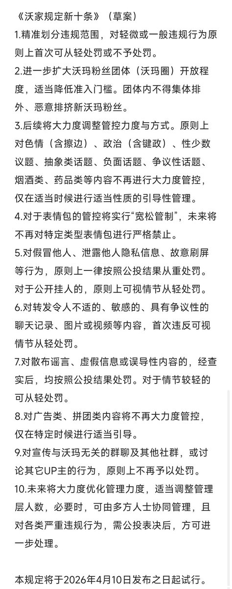

得到的答复：
“明知为害人害己之物，不禁其流行，复放纵无度，堂堂沃星，无此政体”(´；ω；｀)
“一派胡言，不值一驳...”ಥ_ಥ
“如果任由那黑云笼罩沃星的每一个角落，那么未来还会有光明吗?”(´;︵;`)
“倘若此例落实之日，定是沃星消亡之时！纵使归于黄泉之下，亦满腔悲愤矣!”

“明知为害人害己之物，不禁其流行，复放纵无度，堂堂沃星，无此政体”(´；ω；｀)
“一派胡言，不值一驳...”ಥ_ಥ
“如果任由那黑云笼罩沃星的每一个角落，那么未来还会有光明吗?”(´;︵;`)
“倘若此例落实之日，定是沃星消亡之时！纵使归于黄泉之下，亦满腔悲愤矣!”

晚上好！(╥╯v╰╥)ง
当黑夜来临，接下来迎接你的可能不是黎明，而是漫漫暴雨天...(≖͞_≖̥)
当开了快17年的“老店”变了“初心”，当坚守了3年多的“伟大愿望”化为了泡影，那么你还会善良并且热爱这个世界吗？(︶︿︶)
你可能会坚持很久，直到暴雨散去或者“巨变”，也可能会“同流合污”...
请问这样可以吗？ https://t.co/HvyXF9fz2r
当黑夜来临，接下来迎接你的可能不是黎明，而是漫漫暴雨天...(≖͞_≖̥)
当开了快17年的“老店”变了“初心”，当坚守了3年多的“伟大愿望”化为了泡影，那么你还会善良并且热爱这个世界吗？(︶︿︶)
你可能会坚持很久，直到暴雨散去或者“巨变”，也可能会“同流合污”...
请问这样可以吗？ https://t.co/HvyXF9fz2r